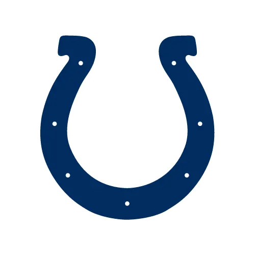
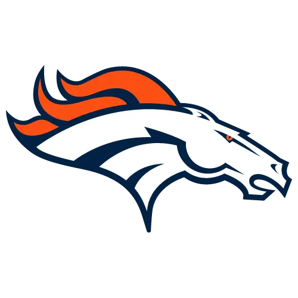
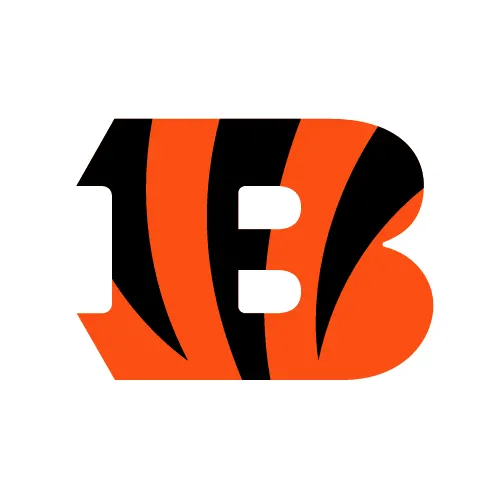
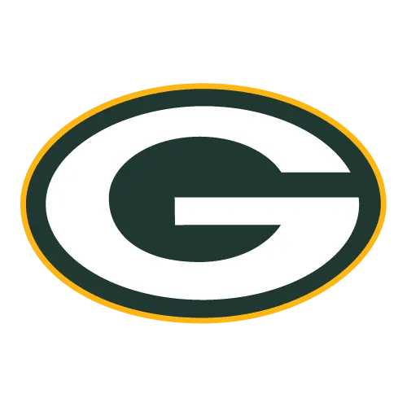

Big Diggs and My Chubb
Ray · Pick #7
The best RB room in the league by a wide margin, three deep with top-ten backs, over a WR group tied for the league's thinnest.
Ray drafted the best running back room in the league and it isn't close: Jonathan Taylor kept at a 2nd, Chase Brown kept at an 8th, and Kenneth Walker at pick 7 are three top-ten backs on one roster. That's the whole grade. The draft around them was the worst in the league by the numbers — no steals anywhere, two reaches inside twelve rounds, and three deep-bench backs the market barely ranks — and the receiver room is tied for the thinnest in the league. But you start three backs, and nobody else starts three like these.
Grade the draft and this is a C-. Grade the roster and it's an A, and the roster is what plays. Taylor, Chase Brown and Walker are the best running back room in the league by nearly four points of projected value, and three top-ten backs is a lineup foundation nobody else has. The cost was everywhere else: the receiver room is tied for last with Waddle, Higgins and Watson, the draft never found a discount, and rounds 15 through 17 spent three picks on backs the market has outside its top 175. Week 6 benches Higgins, Burrow and Brown at once. If the backs stay healthy this is a weekly floor nobody wants to face. If one goes down, the receivers can't cover it.


🔒 Keepers
1st in the league
Taylor at a 2nd, Chase Brown at an 8th — best pair in the league
📊 Draft Picks
9th in the league
No steals, and the bench dragged the total
🏗️ Roster Build
2nd in the league
Best RB room in the league, weakest WRs
Keepers: Two Backs, One of Them Nearly Free
AKeeper · Round 2
The 6th-ranked player in the market at a 2nd-round cost — eight picks of discount, which is about the ceiling the rules allow on a player this good. He's the best starter on the roster and the second-best back anyone kept. A keep on the player, not the price, and the right one.
Keeper · Round 8
An 8th-round cost on a back the market takes in the 2nd — 59 picks of discount, the fifth-largest keeper haul in the league. He projects as a top-six back in the 4th-ranked Bengals offense and starts as the second running back. This is the keep that made the position the best in the league, and it cost a bench pick. Taylor and Brown together are the best keeper pair in the league by projected value, which is why the keeper rank is 1st.
Draft Picks: Paid Full Price, Then Went Shopping in the Dark
C-✓ Biggest Value
Five picks past his league price in round 7 — a fair pick, not a steal, and the best value this draft found in its first twelve rounds. That's the honest headline: Ray didn't beat the board once. Fannin is a second-year tight end in the 30th-ranked Browns offense, projected as a top-six option at a thin position. A fine starter at a fair price, which was as good as it got.
✗ Biggest Reach

Taken 39 picks before his league price in round 11, a bench receiver the projection rates below waiver level. The costlier overpay was earlier: Jaylen Waddle 11 picks early in round 3, which bought the WR1 on a receiver room tied for last. The three backs taken in rounds 15 through 17 sit well outside the market's board too — they don't count toward the card, but they're why the raw draft total is the worst in the league.
ADP Analysis
| Rd | Player | Pos | League ADP* | Pick | Value | Verdict |
|---|---|---|---|---|---|---|
| 1 | Kenneth Walker III | RB | 10 | 7 | −3 | Fair |
| 2 | Jonathan Taylor | RB | 6 | 14 | +8 | Keeper |
| 3 | Jaylen Waddle | WR | 38 | 27 | −11 | Reach |
| 4 | Tee Higgins | WR | 33 | 34 | +1 | Fair |
| 5 | Joe Burrow | QB | 44 | 47 | +3 | Fair |
| 6 | Christian Watson | WR | 55 | 54 | −1 | Fair |
| 7 | Harold Fannin Jr. | TE | 62 | 67 | +5 | Fair |
| 8 | Chase Brown | RB | 15 | 74 | +59 | Keeper |
| 9 | Blake Corum | RB | 84 | 87 | +3 | Fair |
| 10 | Quentin Johnston | WR | 99 | 94 | −5 | Fair |
| 11 | Romeo Doubs | WR | 146 | 107 | −39 | Reach |
| 12 | Los Angeles Rams | DEF | — | 114 | — | — |
| 13 | Rachaad White | RB | 116 | 127 | +11 | Fair |
| 14 | Harrison Mevis | K | — | 134 | — | — |
| 15 | Samaje Perine | RB | 295 | 147 | −148 | Reach |
| 16 | Dylan Sampson | RB | 206 | 154 | −52 | Reach |
| 17 | Najee Harris | RB | 262 | 167 | −95 | Reach |
Roster Build: Three Studs and a Receiver Problem
APositional Value
Team Reliance

Kenneth Walker (~20% of this roster's value) in the 11th-ranked implied offense. A top-nine back by projection on a scoring team, taken three picks early at seven. The environment is fine and the role is the whole bet: he's the RB3 here only because the other two are that good.

Taylor (~24% of value) in a 16th-ranked offense. The best starter on the team in a middling environment — volume is never the question with Taylor, touchdowns are, and a mid-pack offense caps them. Sits in Week 13.

Waddle (~9% of value) as the WR1 in the 21st-ranked implied offense. Drafted 11 picks early in round 3, projected as a WR17. The receiver room needed a real one and this was the reach that tried to buy it. The environment doesn't help.

The biggest bet on the roster — ~35% of value across Higgins, Burrow, Chase Brown and Perine — in the 4th-ranked implied offense. A quarterback-receiver-running back stack on a top-five scoring team is exactly the kind of correlated bet that wins big weeks. All three starters sit together in Week 6, which is the tax.

Christian Watson (~5% of value) as the WR3 in the 9th-ranked offense. A fair pick in round 6 in a good environment. He's a starter here because the receiver room has nobody else.